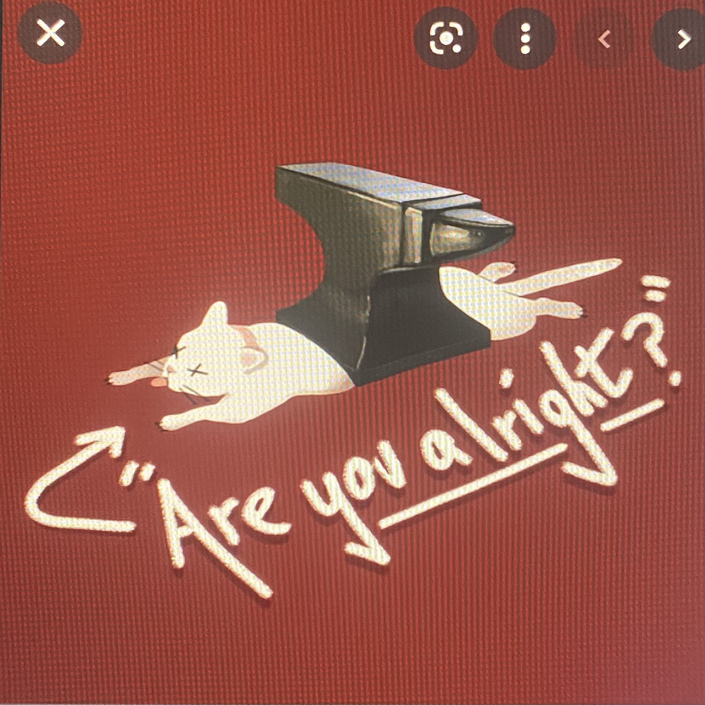
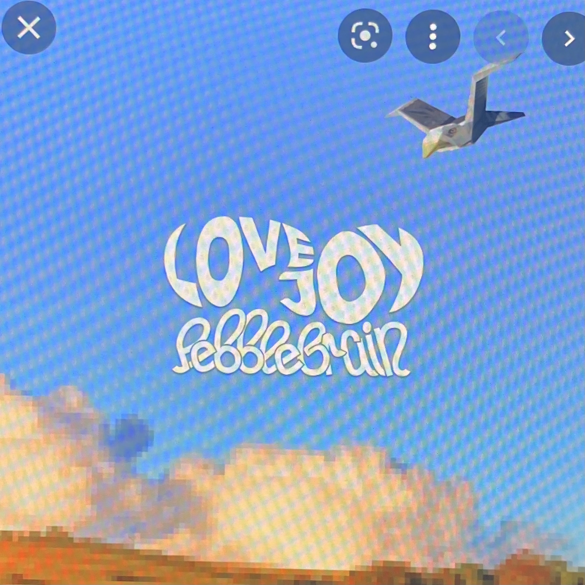

Are you Alright?
Are You Alright? is Lovejoy's debut extended play. The EP was produced by Cameron Nesbitt and mastered by Shaw. It was released on May 10, 2021. The EP has been described by Wilbur as "a collection of stories of mainly nights out and drinking in the United Kingdom" read more...
| Track | Length |
|---|---|
| Taunt | 2:13 |
| Are You Alright? | 2:24 |
| Sex Sells | 4:06 |
| Cause for Concern | 3:22 |
Pebblebrain
Pebble Brain is the second EP by Lovejoy. It was released on October 14, 2021, and the band have said they want to go on tour following its release. Wilbur has said that the EP is a "breakup album" but instead of about a person, being about his "breakup" with the country of England. read more...
| Track | Length |
|---|---|
| Oh Yeah, You Gonna Cry? | 2:49 |
| Model Buses | 2:50 |
| Concrete | 3:16 |
| Perfume | 3:27 |